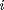

structure
The structure class can hold various substructures. Each substructure can be either a layer of N unitCell objects or a structure by itself. Thus it is possible to recursively build up 1D structures
Copyright (c) 2013, Daniel Schick, André Bojahr, Marc Herzog, Roman Shayduk, Clemens von Korff Schmising All rights reserved.
License: BSD (use/copy/change/redistribute on own risk, mention the authors)
Contents
- Classdef
- Properties
- Constructor
- disp
- displayTab
- visualize
- getHash
- Build Structure from Object
- addSubStructure
- addSubstrate
- Build Structure from XML Struct
- buildStructureFromXML
- buildAtomsFromXMLStruct
- buildUnitCellsFromXMLStruct
- addSubstructuresFromXMLStruct
- addSubstrateFromXMLStruct
- Returns Properties of Structure
- getNumberOfSubStructures
- getNumberOfUnitCells
- getNumberOfUniqueUnitCells
- getLength
- getUniqueUnitCells
- getUnitCellVectors
- getAllPositionsPerUniqueUnitCell
- getDistancesOfUnitCells
- getDistancesOfInterfaces
- interpDistanceAtInterfaces
- getUnitCellPropertyVector
- getUnitCellHandle
Classdef
Each structure instance and all inherited class objects follow handle semantics. Hence a copy of such object will not copy the object itself, but only a handle to that object.
classdef structure < handle
Properties
properties (SetAccess=public,GetAccess=public)
name % STRING name of sample
substructures = {}; % CELL ARRAY of structures in sample
substrate % OBJECT HANDLE structure of the substrate
numSubSystems = 1; % INTEGER number of subsystems for heat and phonons (electronic, lattice, spins, ...)
end%properties
%%Methods
methods
Constructor
Is executed each time an instance of this class is created. Only the name input is obligatory. If you input a valid path to an xml structure definition file, the structure is automatically loaded form this xml file. Also the name is taken from the xml file and the first input of the constructor method becomes unneccessary.
function obj = structure(name,varargin) % initialize input parser and define defaults and validators p = inputParser; p.addRequired('name' , @ischar); p.addOptional('xmlPath','' , @ischar); % parse the input p.parse(name,varargin{:}); % assign parser results to object properties obj.name = p.Results.name; if ~isempty(p.Results.xmlPath) % an _xmlPath_ is given so we build the structure from the % xml structure file. obj.buildStructureFromXML(p.Results.xmlPath); end%if end%function
disp
This is just a wrapper to call the display function displayTab, because, the disp method does not accept input parameters.
function disp(obj) obj.displayTab(); end%function
displayTab
This method is called to display informations of the instance. If an integer input is given the output is tabbed by this amount. This is used for nested structures.
function displayTab(obj,tabs) % check for the numbers of tabs added at the beginning if nargin < 2 tabs = 0; end%if tabstr = ''; for i = 1:tabs tabstr = strcat(tabstr, '\t'); end%for % plot the properties fprintf([tabstr 'Structure properties:\n']); fprintf([tabstr 'Name : %s\n'], obj.name); fprintf([tabstr 'Length: %0.2f nm\n'], obj.getLength()/units.nm); fprintf([tabstr '----\n']); % traverse all substructures for i = 1:size(obj.substructures,1) if isa(obj.substructures{i,1},'unitCell') % the substructure is an unitCell fprintf([tabstr '%d times %s: %0.2f nm\n'], obj.substructures{i,2},... obj.substructures{i,1}.name, obj.substructures{i,2}*obj.substructures{i,1}.cAxis/units.nm); else % the substructure is a structure instance by itself % call the display() method recursively fprintf([tabstr 'SubStructure %d times:\n'],... obj.substructures{i,2}); obj.substructures{i,1}.displayTab(tabs+1); end%if end%for fprintf([tabstr '----\n']); % check for a substrate if isa(obj.substrate,'structure') fprintf([tabstr 'Substrate:\n']); fprintf([tabstr '----\n']); fprintf([tabstr '%d times %s: %0.2f nm\n'], obj.substrate.substructures{1,2},... obj.substrate.substructures{1,1}.name, ... obj.substrate.substructures{1,2}*obj.substrate.substructures{1,1}.cAxis/units.nm); end%if end%function
visualize
plots the atoms in the unitCell for a given strain. You can input a figure handle.
function visualize(obj,varargin) % initialize input parser and define defaults and validators p = inputParser; p.addRequired('obj' , @(x)isa(x,'structure')); p.addParamValue('handle', '', @ishandle); % parse the input p.parse(obj,varargin{:}); % assign parser results to object properties if isempty(p.Results.handle) h = figure; else h = p.Results.handle; end%if a = obj.getUniqueUnitCells(); N = size(a,1); figure(h); distances = obj.getDistancesOfUnitCells/units.nm; stairs(distances,obj.getUnitCellVectors, 'LineWidth', 2); axis([min(distances) max(distances) 0.9 length(obj.getUniqueUnitCells)+0.1]); xlabel('Distance [nm]'); title('Structure Visualization'); set(gca,'YTick',1:N,'YTickLabel', a(:,1)); end
getHash
Returns a unique hash from all unitCell IDs in the correct order in the structure.
function hash = getHash(obj,varargin) UCs = obj.getUniqueUnitCells(); param = cell(size(UCs,1),1); for i=1:size(UCs,1) param{i} = UCs{i,2}.getPropertyStruct(varargin{:}); end%for [~, IDs] = obj.getUnitCellVectors(); param(end+1) = {IDs}; % dataHash is an external function hash = dataHash(param); end%function
Build Structure from Object
addSubStructure
Add a substructure of N unitCells or N structures to the structure.
function addSubStructure(obj,subStructure,N) % check of the substructure is an instance of the unitCell of % structure class if ~isa(subStructure,'unitCell') && ~isa(subStructure,'structure') error(['Class ' class(subStructure) ' is no possible sub structure. Only unitCell and structure classes are allowed!']); end%if % if a structure is added as a substructrue, the substructure % can not have a substrate! if isa(subStructure,'structure') if ~isempty(subStructure.substrate) error('No substrate in substructure allowed!'); end%if end%if % check the number of subsystems of the substructure if obj.numSubSystems > 1 && subStructure.numSubSystems ~= obj.numSubSystems error('The number of subsystems in each substructure must be the same!'); else obj.numSubSystems = subStructure.numSubSystems; end%if % add a substructure of N repetitions to the structure with obj.substructures(end+1,:) = {subStructure N}; end%function
addSubstrate
Add a structure as static substrate to the structure
function addSubstrate(obj,subStructure) if ~isa(subStructure,'structure') error(['Class ' class(subStructure) ' is no possible substrate. Only structure class is allowed!']); end%if obj.substrate = subStructure; end%function
Build Structure from XML Struct
buildStructureFromXML
The xml structure definition file given vy the xmlPath is parsed by the xml_read function (MATLAB Central) and all required objects for the structure are created and finally added to the structure. There is a bug in the original xml_read function from the xml_io_tools lib: you have to replace the line 452 with the following: digits = '(Inf)|(NaN)|(pi)|[\t\n\d\+\-\*\.ei EI\;\,]'; Otherwise arrays are not parsed correctley.
function buildStructureFromXML(obj,xmlPath) % parse the xml structure file s_sample = xml_read(xmlPath); obj.name = s_sample.ATTRIBUTE.name; % set the name of the structure % build the atoms from the xml struct disp(['Building Sample: ' s_sample.ATTRIBUTE.name ' from File']); disp('Loading Atoms into Workspace...'); obj.buildAtomsFromXMLStruct(s_sample.atoms); disp('... Atoms loaded!'); % build the unit cells from the xml struct disp('Loading UnitCells into Workspace...'); obj.buildUnitCellsFromXMLStruct(s_sample.unitCells); disp('... UnitCells loaded!'); % add the substructures to the structure (recursive method) disp('Building Substructures ...'); obj.addSubStructuresFromXMLStruct(s_sample.structure.substructure); disp('... Substructures built!'); % check if substrate has to be added if isfield(s_sample, 'substrate') % add the substrate from the xml struct obj.addSubstrateFromXMLStruct(s_sample.substrate); disp('Substrate added!'); end%if end%function
buildAtomsFromXMLStruct
From the atoms field in the xml struct atomBase and atomMixed objects are created in the base workspace and their IDs are returned.
function atomIDs = buildAtomsFromXMLStruct(obj,s_atoms) % build all atomBase objects from atoms struct s_atomsBase = s_atoms.atom; atomIDs = cell(length(s_atomsBase),1); for i=1:length(s_atomsBase) % get attributes of atomBase attributes = s_atomsBase(i).ATTRIBUTE; % first set the required fields symbol = attributes.symbol; % now remove the required fields from the rest of the % attributes required_fields = {'symbol'}; attributes = rmfield(attributes, required_fields); % create the atomBase object and assign it to the base % workspace atomBaseObject = atomBase(symbol,attributes); ID = atomBaseObject.ID; assignin('base', ID, atomBaseObject); atomIDs(i) = {ID}; % add the atomBase ID to the output array end%for clear atomBaseObject; % check for mixed atoms if isfield(s_atoms, 'atomMixed') % build all atomMixed objects from atoms struct s_atomsMixed = s_atoms.atomMixed; for i=1:length(s_atomsMixed) % get attributes of atomMixed attributes = s_atomsMixed(i).ATTRIBUTE; % first set the required fields symbol = attributes.symbol; % now remove the required fields from the rest of the % attributes required_fields = {'symbol'}; attributes = rmfield(attributes, required_fields); % create the atomMixed object, add the corresponding % atomBase objects and their fractions, and assign it % to the base workspace atomMixedObject = atomMixed(symbol,attributes); ID = atomMixedObject.ID; % traverse constituents of a mixed atom for j=1:length(s_atomsMixed(i).atom) atomMixedObject.addAtom(... evalin('base',s_atomsMixed(i).atom(j).ATTRIBUTE.ID),... s_atomsMixed(i).atom(j).ATTRIBUTE.fraction); end%for assignin('base', ID, atomMixedObject); % add the atomMixed ID to the output array atomIDs(end+1) = {ID}; end%for clear atomMixedObject; end%if end%function
buildUnitCellsFromXMLStruct
From the unitCells field in the xml struct unitCells objects are created in the base workspace and their IDs are returned.
function unitCellIDs = buildUnitCellsFromXMLStruct(obj,unitCellsStruct) s_unitCells = unitCellsStruct.unitCell; unitCellIDs = cell(length(s_unitCells),1); for i=1:length(s_unitCells) % get attributes of the unitCell attributes = s_unitCells(i).ATTRIBUTE; % first set the required fields ID = attributes.ID; nameUC = attributes.name; cAxis = attributes.cAxis; % now remove the required fields from the rest of the % attributes required_fields = {'name', 'ID', 'cAxis'}; attributes = rmfield(attributes, required_fields); % create the unitCell object with all optinal parameters as % name/value pair; add the corresponding % atom objects and their postions; and assign it % to the base workspace unitCellObject = unitCell(ID,nameUC,cAxis,attributes); ID = unitCellObject.ID; for j=1:length(s_unitCells(i).atom) % add atom to unitCell unitCellObject.addAtom(... evalin('base',s_unitCells(i).atom(j).ATTRIBUTE.ID),... s_unitCells(i).atom(j).ATTRIBUTE.position); end%for assignin('base', ID, unitCellObject); % add the unitCell ID to the output array unitCellIDs(i) = {ID}; end%for clear unitCellObject; end%function
addSubstructuresFromXMLStruct
Recursive Method - builds substructures from the given xml struct and add them to the structureObj.
function addSubStructuresFromXMLStruct(obj,s_substructures,structureObj) % if no structureObj is given this is the first recursion layer % and we assign the callign structure object itself if nargin < 3 structureObj = obj; end%if % traverse the substructure struct for i=1:length(s_substructures) % get the number of repetitions of the substructre N = s_substructures(i).ATTRIBUTE.N; if isfield(s_substructures(i),'substructure')... && ~isempty(s_substructures(i).substructure) % this substructure is a structure object itself nameS = s_substructures(i).ATTRIBUTE.name; % create the structure object of the substructre substructureObject = structure(nameS); % recursive call to add layers and/or substructures to % the substructre obj.addSubStructuresFromXMLStruct(... s_substructures(i).substructure,substructureObject); % add the substructre to the given structure object structureObj.addSubStructure(substructureObject,N); % assign the substructure structure object to the _base % workspace_ assignin('base', genvarname(nameS), substructureObject); clear substructureObject; else % this substructure is a simple layer structureObj.addSubStructure(... evalin('base',s_substructures(i).ATTRIBUTE.unitCellID),N); end%if end%for end%function
addSubstrateFromXMLStruct
Adds a simple substrate made of a single layer of N unitCells from the substrate struct to the structure.
function addSubstrateFromXMLStruct(obj,substrate) % create the substrate structre object substrateObject = structure('substrate'); % add the N unitCells to the substrate substrateObject.addSubStructure(... evalin('base',substrate.ATTRIBUTE.unitCellID),... substrate.ATTRIBUTE.N); % add the substrate structure object to the _base workspace_ % and add it to the structure assignin('base', 'substrate', substrateObject); obj.addSubstrate(substrateObject); clear substrateObject; end%function
Returns Properties of Structure
getNumberOfSubStructures
Returns the number of all sub structures. This methods does not return the number of all unitCells in the structure, see getNumberOfUnitCells().
function N = getNumberOfSubStructures(obj) N = 0; %traverse the substructres for i = 1:size(obj.substructures,1) if isa(obj.substructures{i,1},'unitCell') % its a unitCell so add 1 N = N+1; else % its a sturcture, so call the method recursively N = N + obj.substructures{i,1}.getNumberOfSubStructures(); end%if end%for end%function
getNumberOfUnitCells
Returns the number of all unitCells in the structure.
function N = getNumberOfUnitCells(obj) N = 0; %traverse the substructres for i = 1:size(obj.substructures,1) if isa(obj.substructures{i,1},'unitCell') % its a unitCell so add m unitCells N = N + obj.substructures{i,2}; else % its a sturcture, so call the method recursively N = N + obj.substructures{i,1}.getNumberOfUnitCells()... *obj.substructures{i,2}; end%if end%for end%function
getNumberOfUniqueUnitCells
Returns the number of unique unitCells in the structure.
function N = getNumberOfUniqueUnitCells(obj) N = size(obj.getUniqueUnitCells(),1); end%function
getLength
Retruns the length from surface to bottom of the structure
function L = getLength(obj) [~, dEnd] = obj.getDistancesOfUnitCells(); L = dEnd(end); end
getUniqueUnitCells
Returns a cell array of IDs and handles of all unique unitCell instances in the structure. The uniqueness is determined by the ID of each unitCell instance.
function UCs = getUniqueUnitCells(obj) UCs = {}; % {:,1} IDs as STRINGS, {:,2} OBJECT UnitCell Handle %traverse the substructres for i = 1:size(obj.substructures,1) if isa(obj.substructures{i,1},'unitCell') % its a UnitCell ID = obj.substructures{i,1}.ID; if isempty(UCs) % the cell array is empty at the beginning so add % the first unitCell UCs{1,1} = ID; UCs{1,2} = obj.substructures{i,1}; else % the cell array is not empty so check if the ID is % already in the UCs ID vector if sum(strcmp(ID,UCs(:,1))) == 0 % ID not in list, so add it UCs = vertcat(UCs,{ID obj.substructures{i,1}}); end%if end%if else % its a substructure if isempty(UCs) % the cell array is empty at the beginning so call % the method recursively and add the result to the % UCs array UCs = obj.substructures{i,1}.getUniqueUnitCells(); else % the cell array is not empty so check if the IDs % from the recursive call are already in the UCs ID % vector. temp = obj.substructures{i,1}.getUniqueUnitCells(); for j = 1:length(temp(:,1)) % check all IDs from recursive call if sum(strcmp(temp{j,1},UCs(:,1))) == 0 % IDs not in list, so add them UCs = vertcat(UCs,temp(j,:)); end%if end%for end%if end%if end%for end% function
getUnitCellVectors
Returns three vectors with the numeric index of all unit cells in a structure given by the getUniqueUnitCells() method and addidionally vectors with the IDs and Handles of the corresponding unitCell instances. The list and order of the unique unitCells can be either handed as an input parameter or is requested at the beginning.
function [Indices IDs Handles] = getUnitCellVectors(obj,UCs) Indices = []; IDs = {}; Handles = {}; % if no UCs (UniqueUnitCells) are given, we have to get them if nargin < 2 UCs = obj.getUniqueUnitCells(); end%if %traverse the substructres for i = 1:size(obj.substructures,1) if isa(obj.substructures{i,1},'unitCell') % its a UnitCell % find the index of the current UC ID in the unique % unitCell vector Index = find(strcmp(UCs(:,1),obj.substructures{i,1}.ID)); % add the index N times to the Indices vector Indices = vertcat(Indices, Index*ones(obj.substructures{i,2},1)); % create a cell array of N unitCell IDs and add them to % the IDs cell array temp = cell(obj.substructures{i,2},1); temp(:,1) = {obj.substructures{i,1}.ID}; IDs = vertcat(IDs, temp); % create a cell array of N unitCell handles and add them to % the Handles cell array temp = cell(obj.substructures{i,2},1); temp(:,1) = {obj.substructures{i,1}}; Handles = vertcat(Handles, temp); else % its a structure % make a recursive call and hand in the same unique % unit cell vector as we used before [temp1 temp2 temp3] = obj.substructures{i,1}.getUnitCellVectors(UCs); temp11 = []; temp22 = {}; temp33 = {}; % concat the temporary arrays N times for j = 1:obj.substructures{i,2} temp11 = vertcat(temp11, temp1); temp22 = vertcat(temp22, temp2); temp33 = vertcat(temp33, temp3); end%for % add the temporary arrays to the outputs Indices = vertcat(Indices, temp11); IDs = vertcat(IDs, temp22); Handles = vertcat(Handles, temp33); end%if end%for end%function
getAllPositionsPerUniqueUnitCell
Returns a cell array with one vector of position indices for each unique unitCell in the structure.
function Pos = getAllPositionsPerUniqueUnitCell(obj) UCs = obj.getUniqueUnitCells(); Indices = obj.getUnitCellVectors(); Pos = cell(length(UCs(:,1)),1); for i = 1:length(UCs(:,1)) Pos{i} = find(Indices == i); end%for end%function
getDistancesOfUnitCells
Returns a vector of the distance from the surface for each unit cell starting at 0 (dStart) and starting at the end of the first UC (dEnd) and from the center of each UC (dMid).
function [dStart dEnd dMid] = getDistancesOfUnitCells(obj) cAxises = obj.getUnitCellPropertyVector('cAxis'); dEnd = cumsum(cAxises); dStart = vertcat(0, dEnd(1:end-1)); dMid = dStart + cAxises./2; end%function
getDistancesOfInterfaces
Returns the distances from the surface of each interface of the structure.
function [distIntf Indices] = getDistancesOfInterfaces(obj) [dStart dEnd] = obj.getDistancesOfUnitCells(); Indices = [1 diff(obj.getUnitCellVectors())']; distIntf = [dStart(Indices ~= 0)' dEnd(end)]'; end
interpDistanceAtInterfaces
Returns a distance Vector of the center of UCs interpolated by an odd number N at the interface of sturctures.
function [distInterp originalIndicies] = interpDistanceAtInterfaces(obj,N) [dStart,dEnd,dMid] = obj.getDistancesOfUnitCells(); % these are the distances of the interfaces distIntf = obj.getDistancesOfInterfaces(); % we start with the distances of the centers of the unit cells distInterp = dMid; N = floor(N); % make N an integer if mod(N,2) == 0 % we want to have odd numbers N = N+1; end%if % traverse all distances for i=1:length(distIntf) x = distIntf(i); % this is the distance of an interface inda = finderb(x,dStart); % this is the index of an UC after the interface indb = inda-1; % this is the index of an UC before the interface % now interpolate linearly N new distances at the interface if indb == 0 % this is the surface interface distInterp = vertcat(distInterp,linspace(0,dMid(inda),2+(N-1)/2)'); elseif inda >= length(dMid) % this is the bottom interface distInterp = vertcat(distInterp,linspace(dMid(inda),dEnd(end),2+(N-1)/2)'); else % this is a surface inside the structure distInterp = vertcat(distInterp,linspace(dMid(indb),dMid(inda),2+N)'); end%if end%for distInterp = unique(sort(distInterp)); % sort and unify the distances % these are the indicies of the original distances in the interpolated new vector originalIndicies = finderb(dMid,distInterp); end%function
getUnitCellPropertyVector
Returns a vector for a property of all unitCells in the structure. The property is determined by the propertyName and returns a scalar value or a function handle.
function Prop = getUnitCellPropertyVector(obj,propertyName) % get the Handle to all unitCells in the Structure [~, ~, Handles] = obj.getUnitCellVectors(); if isa(Handles{1}.(propertyName),'function_handle') Prop = cell(obj.getNumberOfUnitCells(),1); for i = 1:obj.getNumberOfUnitCells() Prop(i) = Handles{i}.(propertyName); end%for elseif iscell(Handles{1}.(propertyName)) Prop = cell(obj.getNumberOfUnitCells(),length(Handles{1}.(propertyName))); for i = 1:obj.getNumberOfUnitCells() Prop(i,:) = Handles{i}.(propertyName); end%for else UCs = obj.getUniqueUnitCells(); for i = 1:size(UCs,1) temp(i) = length(UCs{i,2}.(propertyName)); end%for Prop = zeros(obj.getNumberOfUnitCells(),max(temp)); clear temp; % traverse all unitCells for i = 1:obj.getNumberOfUnitCells() temp = Handles{i}.(propertyName); Prop(i,1:length(temp)) = temp; end%for end%if end%function
getUnitCellHandle
Returns the handle to the unitCell at position  in the structure.
function Handle = getUnitCellHandle(obj,i) [~, ~, Handles] = obj.getUnitCellVectors(); Handle = Handles{i}; end%function
end% methods
end% class